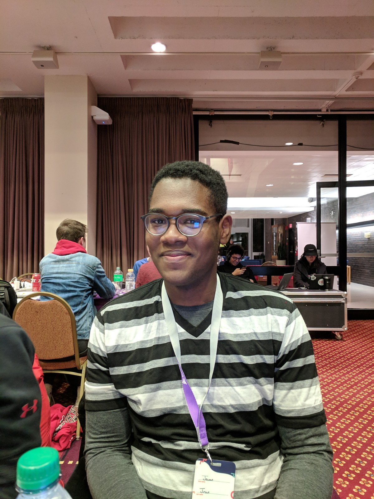
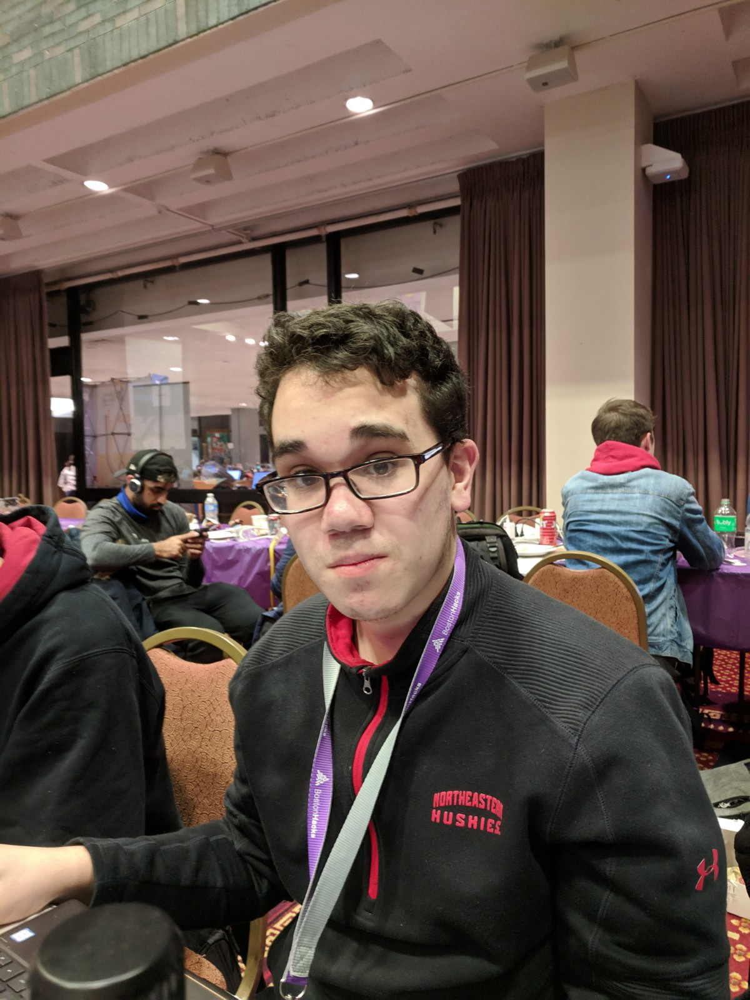
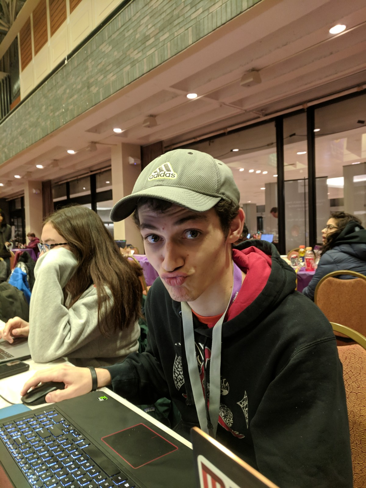
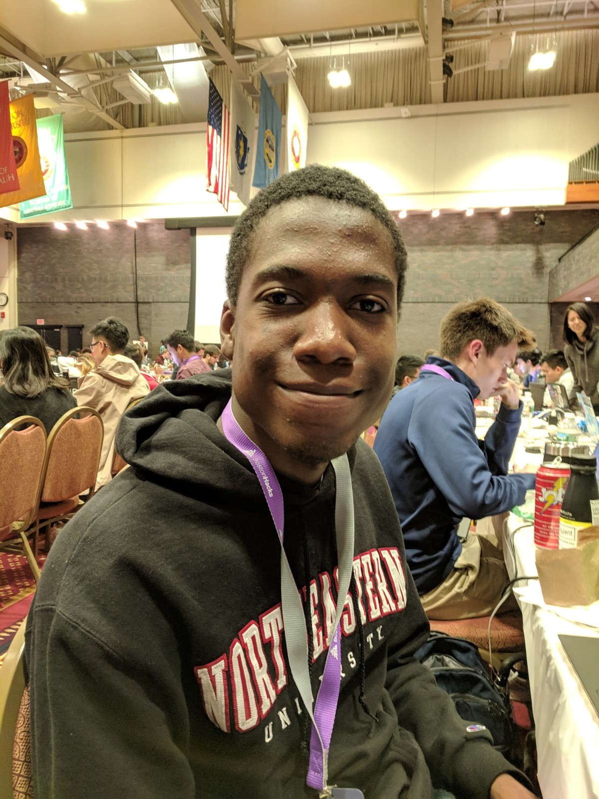
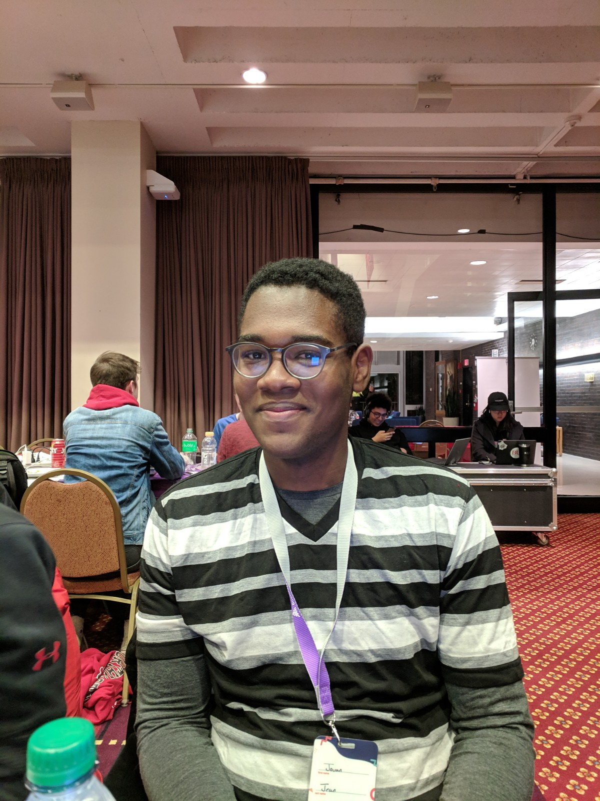
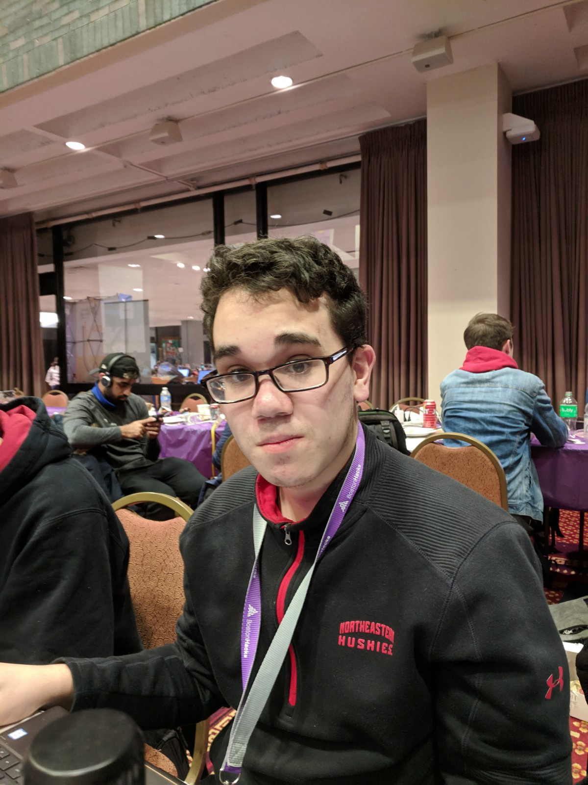
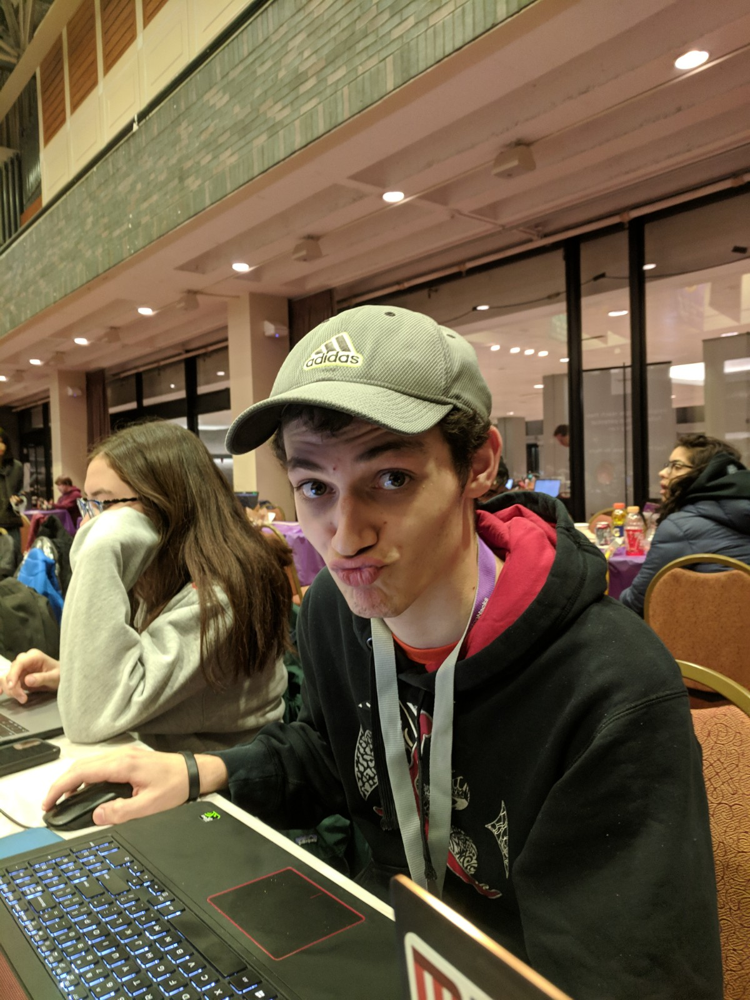
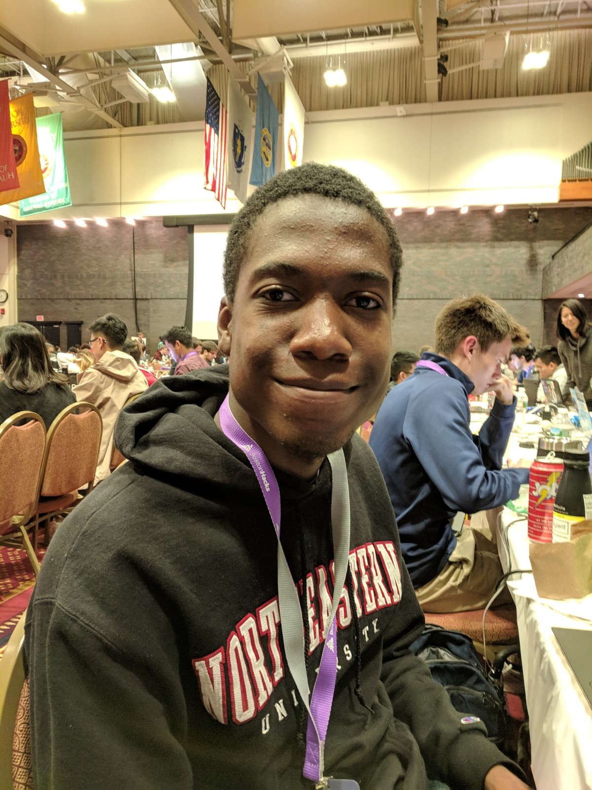

Crimelite is a website created by The 5 Racketeers, a group of students from Northeastern University. Crimelite explores the relationship between crime rates and the light level on the streets of Boston, indicated by the presence of streetlights. Using data provided by the City of Boston through Analyze Boston, it visualizes crime rates and streetlight density. This is done through Google Maps API. Additionally, using this data and geohashing, the map can recommend locations to build new streetlights.
 






